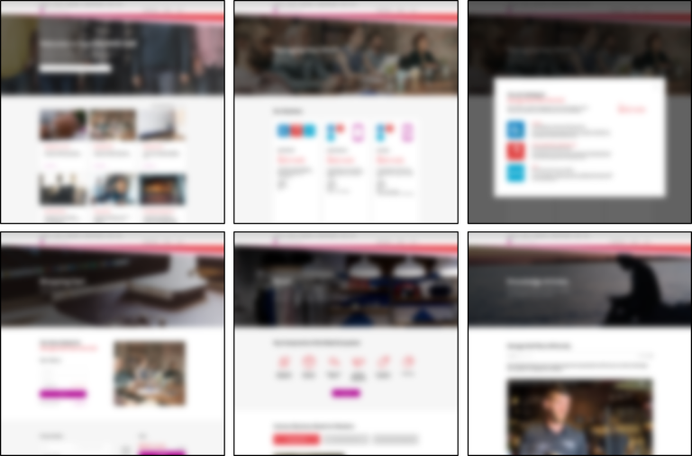

UX Designer / Product Owner based in Sydney
UX Designer / Product Owner based in Sydney
Telstra has a business SaaS Marketplace called Telstra Apps Marketplace (TAM) designed to empower business to buy and manage cloud applications online. I was brought into the TAM team to look at how the front end experience could be improved for customers. I worked on the project from research to prototyping with the occasional help from a digital agency for visual design skills.
I was given a very open ended scope with the guidance of “we need a way to fix the front end”. Being new to the team I needed to define the scope in more detail and then produce a design proposal.
Firstly I needed to understand the platform, using the analytics tools being utilised on the marketplace. These tools included Omniture, Google Analytics and WalkMe as well as a number of NPS surveys. With the data from the aforementioned tools I was starting to understand who the customers were that used the platform and some pain points that were present.
Despite reading all the qualitative data available I still wanted to talk to customers to be able to understand them better. However, I still didn’t have a clear picture of who the customer base was including the size, the type and the technical ability of the businesses. With this in mind I ran an online survey over a two week period that was presented to all users. The survey asked simple demographic questions to help me understand who our customers were. After the two weeks I had about 100 responses giving me enough to start recruiting customers.
While I was trying to understand who our customers were I was also working through a design proposal. The purpose of the design proposal was to ensure that all stakeholders were on the same page and to provide a clear scope for the project. In order to pull together this proposal I met with the majority of key stakeholders that work on the marketplace. I had a number of standard questions that I asked; including what you see as the purpose of the project and what you would like to see happen. As the project was initially low key I decided not to hold a stakeholder alignment workshop as I was planning on keeping people in the loop throughout the project. If I was to do a similar project again I would definitely hold at least a meeting just to get everyone in the same room, that way people are less likely to come out of the woodwork midway through the project.
With an understanding of the stakeholder’s opinions I pulled together a design proposal that outlined what the design process was, the timings associated with it, the key stakeholder checkpoints and costs (example slide below). This document was approved and I moved onto research.
From the survey I ran on TAM I had a pretty good idea of the breakdown of customers. With this I started to write up a recruitment specification; including a breakdown of customers I wanted, available slots, and screener. As I wanted to get enough customers from each group to ensure I fully understood the customer base I ended up interviewing more users than the standard 6-8. Unfortunately, there was a mix up with the recruitment agency I used and the spread requested was not the spread that came to the interview.
Lesson: Although this was frustrating it was a good lesson in how to handle recruiters and really what to look for in a recruiter. For this research I wanted very specific people and in future I would recruit them myself and use an agency for scheduling and payment.
Whilst the recruiter was organising people for our interviews I had to decide on a location as well as a discussion guide. For the location I decided to conduct the interviews in the Telstra design facilities. Although this isn’t the ideal place to get fully unbiased answers from customers (they tend to want to be polite if they are at your facility) I wanted to use the interviews as a way to convince some stakeholders of the importance of listening to users. For further research it would be useful to visit businesses in their offices but for the purpose outlined above having in house testing worked wonders.
With the customers lined up and a discussion guide avoiding leading questions I was almost ready to conduct the interviews. The only thing that was missing was a note taker, so I contacted an agency and we were provided with someone for the first couple of days of interviews. Unfortunately, we didn’t have funds for more than that, however, with the ability to record and the majority of interviews being at the beginning of the week it was manageable. With the number of interviews that I ran I would prefer to have had someone to trade questioning with as it was taxing running a week of interviews on my own.
Once the interviews were completed it was time for me to synthesise the results. I had decided early on that I wanted to create a number of personas for the team as their current personas were not based on actual businesses. With this in mind my synthesis was done in two streams:
In order to synthesize I spent a few days compiling all my notes from the interviews and then locked myself in a room for the rest of the week and created a number of different affinity maps.
I was able to find four personas out of the data as well as a number of areas for improvement of the platform, some which were already known and some that were new. This was quite difficult on my own, I much prefer working with others as you can get different points of view on the data. These different points of view can lead to more innovation.
With the synthesis completed I created a pack for distribution amongst the team and I presented my findings in a number of stakeholders’ team meetings.
From the customer research it was clear what customers were expecting and what they wanted from a SaaS marketplace. With this in mind I created a number of sketch prototypes. These sketches were put on UserTesting to confirm my hypothesis was accurate. I got feedback from five customers who liked the improvement but had a few points for further improvement.
With these improvements taken on board I designed some medium fidelity screens using Sketch; which I then presented to my team.
When I presented I found that a number of my team understood it but a few felt that it wasn’t enough to inspire change. Due to this I requested access to a visual designer and I spent the next week producing a high fidelity version. I then tested this prototype again using UserTesting and received a lot of positive feedback.
With the prototype at a stage that I was happy with I compiled a pack to present to the stakeholders. Included in this pack was an initial user journey, the prototype and recommendations for moving forward. The aim was for a project to be initiated that went through all the technical requirements as well as a current expected user behaviour. Once the pack was handed over I stepped off the project to be brought back on once funding approval had been granted.